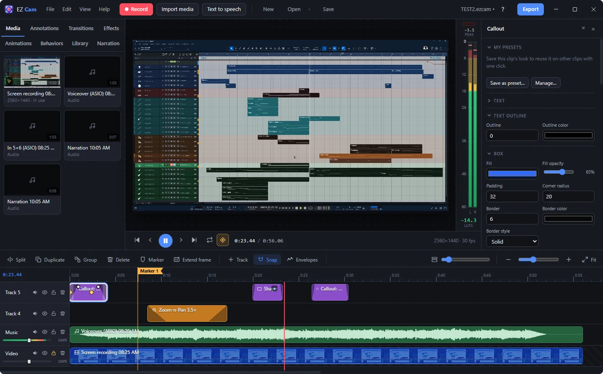

Record it. Edit it. Share it.
EZ Cam is a screen recorder and video editor for Windows. Record your screen, camera and voice, polish it on a timeline, and upload it straight to your YouTube channel.
Free. Updates install themselves. What's new in each version

Screen, camera & sound
Record a screen, a window or a region, with your webcam (blur or replace the background, no green screen needed), microphones, system sound and ASIO interfaces, each on its own track.
MIDI notes on screen Beta
Play your MIDI keyboard while you record and viewers see the keys light up, the chord names, or falling notes. Your music software keeps using the keyboard at the same time.
Timeline editing
Cut, trim, split, group and ripple-edit across tracks, with markers that become YouTube chapters.
Arranger Beta
Mark sections of your video above the timeline, then drag a whole section and everything under it moves with it, like the arranger track in a music app.
Edit by text
Speech becomes text on your own PC. Delete words to cut them from the video, remove ums and long pauses in one go, and add styled captions.
Callouts & keystrokes
Titles, callouts, arrows, spotlights and blur, plus keystroke callouts made automatically from your recording. Save your favourites to reuse.
Graphics with Claude
Describe a lower-third, title card or end screen and Claude draws it in your colours, or suggests graphics from what you say in the video.
Zoom-n-Pan & cursor
Zoom in on the action, automatically or by hand, with cursor highlights, click effects and smooth motion.
Stick to clip
Blur, a callout or an arrow follows a video or picture as it moves and zooms, with no keyframes to set.
Animations & transitions
Keyframe animations, ready-made behaviors, and transitions between clips such as cross-dissolve, push and wipe.
Clean audio
AI voice clean-up, noise removal, de-click and de-ess, voice EQ and compressor, loudness normalizing and automatic ducking of music under your voice.
Pre-render Beta
Render a heavy part of the timeline once and it plays back smoothly while you keep editing.
Interactive videos Beta
Clickable hotspots, quizzes and click-along tutorials, exported as a web page you can share.
Text to speech
Type a script and get a voice-over, with free Windows voices or natural ElevenLabs voices.
Export & upload
Fast MP4, WebM and GIF export, direct upload to your own YouTube channel, and project zips to share a whole project.